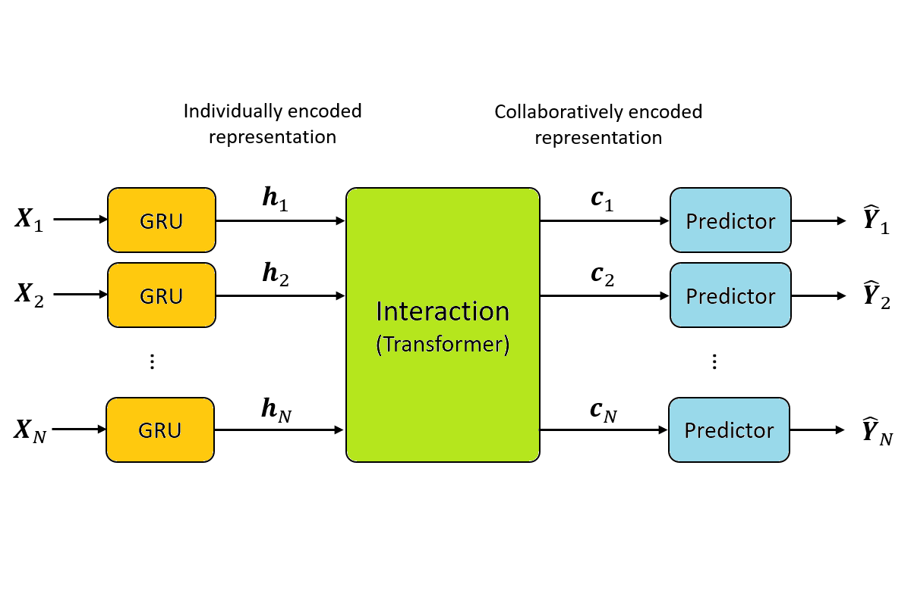

The self-attention mechanism of the transformer allow multiple time series to interact with each other.
By combine models which are randomly initialized into an ensemble, the overall forecast become more robust.
Employing an SIR-based data model, we generate more data for training and validation. The generated data was shown to be distributionally closer to the test data.
Contributed to the
US COVID-19 Forecast Hub
Contributed to the
German COVID-19 Forecast Hub
Welcome to drop me a message